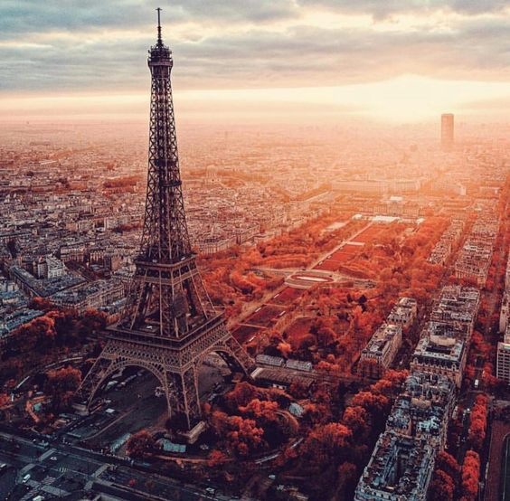
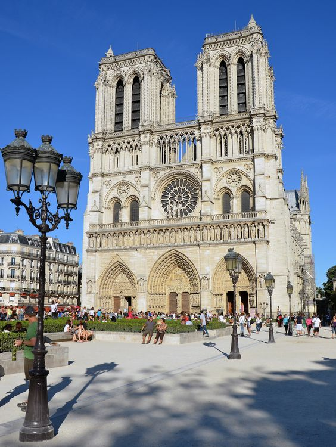
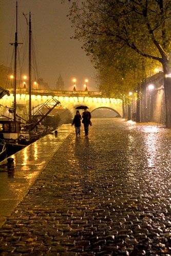

PARYŻ
Drugi dzień mojej podróży rozpocząłem w Paryżu. Po wczorajszym dniu pełnym emocji w Londynie, byłem gotowy na nowe przygody w stolicy Francji. Z samego rana wybrałem się na zwiedzanie jednego z najbardziej ikonicznych miejsc na świecie - Wieży Eiffla. Wspinając się na jej szczyt, mogłem podziwiać niesamowitą panoramę miasta. Widok zapierał dech w piersiach i pozwolił mi na chwilę oderwać się od rzeczywistości.
Po zachwycających widokach z Wieży Eiffla postanowiłem odwiedzić katedrę Notre-Dame. Spacerując po jej majestatycznych wnętrzach, poczułem się, jakbym przeniósł się w czasie. Ta gotycka perła architektury wywarła na mnie ogromne wrażenie, zwłaszcza że była tłem jednej z moich ulubionych gier - Assassin's Creed Unity. Przechadzając się po tych samych korytarzach, które zwiedzałem w grze, czułem się jak bohater przygody.
W miarę jak opuszczałem katedrę, poczułem lekkie ukłucie niepokoju. Przypomniałem sobie, że znowu nie mam mojej torby. Przeczesując pamięcią, gdzie mogłem ją zgubić, nagle poczułem, że ktoś mnie obserwuje. Odwróciłem się i zobaczyłem znajomą twarz - był to jeden z lokalnych sprzedawców, który trzymał moją torbę! Okazało się, że znalazł ją w pobliżu Notre-Dame i rozpoznał mnie z opisu. Z ogromną ulgą i wdzięcznością odebrałem swoją zgubę, nie mogąc uwierzyć w ten szczęśliwy zwrot wydarzeń.
Po odzyskaniu torby, postanowiłem uczcić to szczęśliwe zakończenie w jednym z paryskich bistr. Wnętrze knajpy przywitało mnie ciepłą atmosferą, pełną zapachu tradycyjnych francuskich potraw i dźwięków rozmów miejscowych. Usiadłem przy barze, zamawiając klasyczny boeuf bourguignon, czując, jak powoli ulatnia się napięcie związane z zaginioną torbą. Może właśnie ta chwila spokoju i posiłku pozwoli mi spojrzeć na sytuację z nowej perspektywy?
Po opuszczeniu bistro, zdecydowałem się na spacer po Sekwanie. Nocne oświetlenie Paryża dodawało miastu jeszcze większego uroku. Spacerując po nabrzeżach, poczułem, że ten dzień był pełen niespodzianek i emocji. Mimo wszelkich trudności, jakie mnie spotkały, mogłem cieszyć się chwilą i magią tego miejsca.
Niestety, czas nieubłaganie upływał, a ja musiałem wrócić na lotnisko, by kontynuować swoją podróż. Z mieszanką radości, wdzięczności i lekkiego smutku opuściłem Paryż, obiecując sobie, że kiedyś wrócę, by odkrywać więcej tajemnic tego magicznego miasta. Ale na razie czekał mnie kolejny cel - Nowy Jork!
Więcej zdjęć z Paryża jest dostępne w Galerii